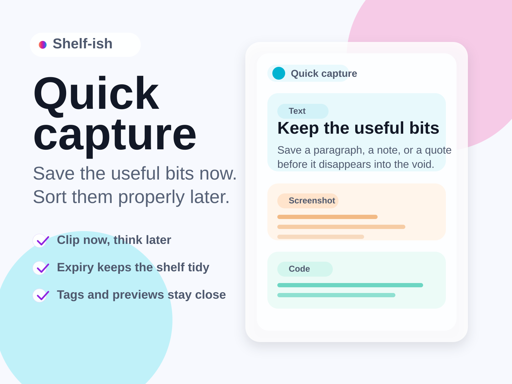
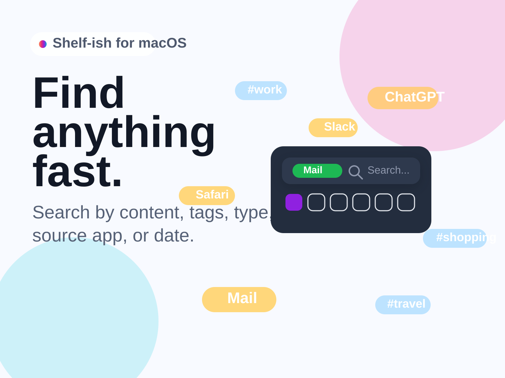
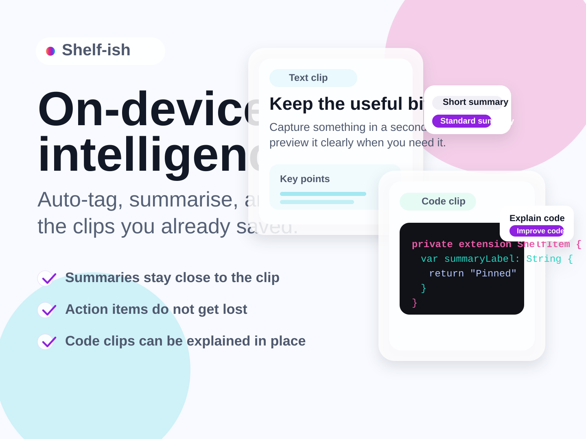

Text clip
2m ago
Save the paragraph now, sort it out later, and keep moving.
Save text, links, files, screenshots, code, audio, and more before they vanish into clipboard oblivion. Pin what matters, let the rest evaporate, and find everything fast when you need it.
The App Store link can drop in later without changing the layout.
Capture a fleeting link, clip a block of code, pin that one thing you absolutely must not lose, and let the rest expire quietly in the background.
Shelf-ish is a private shelf for the useful scraps you only need for a little while: quick to save, easy to scan, and happy to let the unimportant bits disappear.
Save text, links, screenshots, files, locations, images, phone numbers, and audio notes while they are still within arm’s reach.
Search by content, tags, clip type, source app, or date so the right thing shows up before your train of thought leaves the station.
Summarise text, extract action items, explain code snippets, and add automatic tags with privacy-conscious tooling.
Pin what matters, snooze what can wait, and let short-lived clips expire so your shelf stays useful instead of merely impressive.
See links, maps, files, images, and code in a glanceable layout designed to feel native on Apple platforms.
No analytics, local-first storage, support for hidden sensitive content, and syncing through Apple’s services when available.
A few moments from the Shelf-ish experience, from fast capture to focused search and on-device tools that keep useful work moving.

Save the useful thing now and sort it properly later, without derailing whatever you were doing in the first place.

Search across content, tags, source apps, and clip types to get back to the right item before it slips into folklore.

Summaries, action items, and code help sit close to the clips themselves, which is where the useful magic belongs.
The support and privacy pages are included and styled to match, so the whole site is ready to publish on GitHub Pages without a last-minute scramble.
Questions, bug reports, and privacy requests each have a clear home, which is frankly more than can be said for most clipboards.